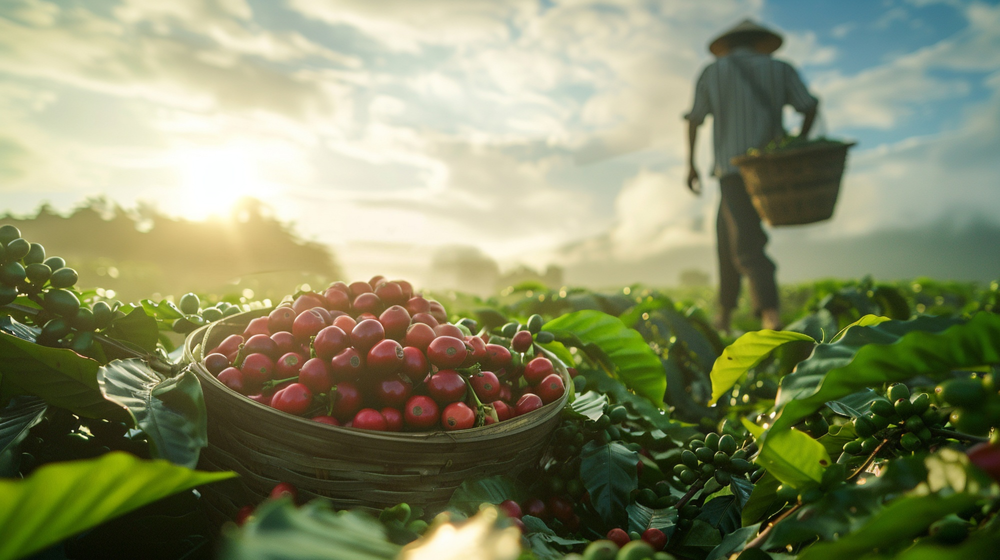
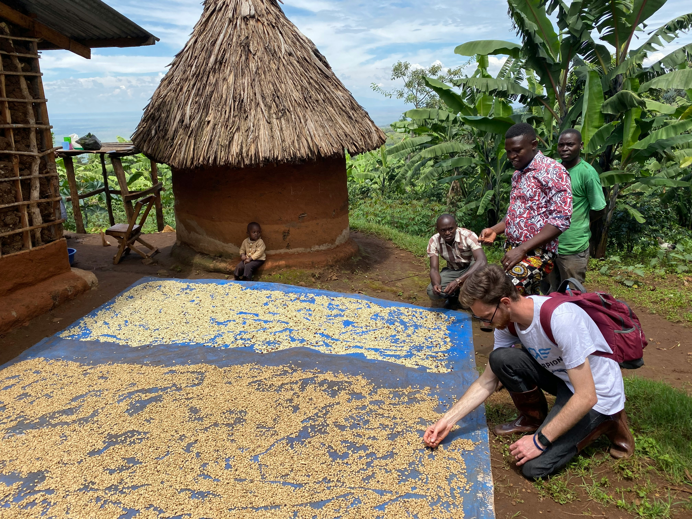
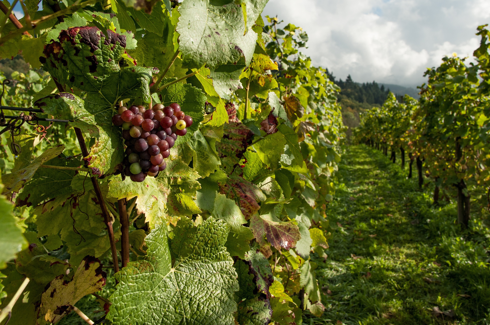
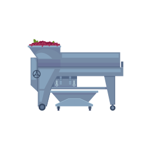
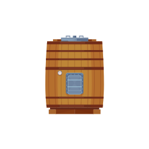
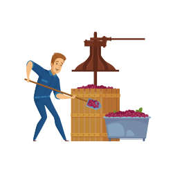

homeHome > 회사소개 >
Coffee & Wine
Coffine Story
Coffee & Wine
About Coffee
-

- 최적의 로스팅 기법으로 언제
어디에나 조화로운 커피 - 커핀그루나루의 커피는 각 산지 본연의 특징이 잘 살아날 수 있도록 씨티(City)~풀씨티(Full City) 로스팅 포인트를 철저히 고수하고 있습니다. 또한 반열풍 로스팅 머신을 이용하여 황금비율로 블랜딩 하여 맛을 표현하고 있습니다. 특히 베이커리 및 케이크와도 아주 잘 어울리는 맛으로 언제 어디서나 조화로운 커피를 즐길 수 있습니다. 커핀그루나루는 고객들에게 가장 좋은 품질의 커피 맛을 제공하기 위해 끊임없이 노력하고 있습니다.
- 최적의 로스팅 기법으로 언제
-

- Coffee Cupping Note &
DOT(Dried On Tree) PROCESSING - 수확한지 1년 미만의 햇생두, 사용하여 신선함이 살아있으며, DOT 프로세싱으로 커피의 단맛과 향미가 한층 더 도드라져, 본연의 맛을 더 풍부하게 느낄 수 있습니다. 브라질 원두 고유의 묵직한 바디감이 느껴지며, 아몬드의 고소함과 밀크초콜릿의 은은한 단맛이 균형을 이루는 매력적인 맛입니다. 커피를 머금었을 때 느껴지는 부드러운 실키함을 느껴보세요!
- Coffee Cupping Note &
ROASTING POINT
-
라이트(Light)
-
미디엄(Medium)
1차 파핑이 시작되는 시기입니다. 산뜻한 맛과 품종의 특성이 강한 지점이며 생두의 부피도 많이 커지고 맛과 향에서 엄청난 변화를 가져오는 시기, 커핑 테스트는 대부분 이 시점에서 실시합니다. -
시티(City)
2차 파핑의 시작지점입니다.
이때부터는 신맛이 눈에 띄게 줄어들고 쓴맛이 점점 살아나는 시기입니다. 핸드드립으로 마시기 좋은 배전도입니다. -
풀시티(Full City)
2차파핑의 정점으로 가고있는 지점입니다. 신맛은 많이 줄어들고 쓴맛이 강해지기 시작하는 단계입니다. 흔히 이때부터 에스프레소용으로 사용하고 시티로스팅과 더불어 가장 선호하는 로스팅 단계입니다. -
프렌치(French)
2차파핑이 정점을 지나고 오일이 배출되는 시기입니다. 신맛은 거의 나지 않고 쓴맛이 지배적이기 시작합니다. 품종의 특성이 많이 사라지고 있는 지점입니다.
About Wine
-

- 세계 최대의 와인 생산국
이탈리아의 향과 맛을 담다 - 커핀그루나루는 전 세계 와인
산업의 가장 중요한 위치이자 최대 와인 생산국인 이탈리아 와인을 공급하고 있습니다.
각 지방의 개성을 충분히 살리는 동시에 수천 년에 걸친 양조기술의 노하우와 기술을 접목하여 세계 최고 수준이라는 평가를 받고 있는 이탈리아 와인, 그 향과 맛을 커핀그루나루를 찾는 고객들이 즐길 수 있도록 실현했습니다.
- 세계 최대의 와인 생산국
-

- 100년 이상의 전통과 품질!
최고의 생산량과 판매량을 자랑하는
‘몬텔비니 와이너리’ - ‘몬텔비니 와이너리’는
1885년을 시작으로 오랜 역사와 전통을 자랑하는 이태리 와인 생산사로서, 이태리 최대 와인 생산 시설을 보유하고 있으며 영국, 호주, 미국 등
세계 약 20여 개 국에 수출하는 곳입니다.
이에 커핀그루나루는 오랜 시간의 노력 끝에 2008년 이태리 몬텔비니사의 ‘몬텔비니 와인’을 국내 최초로 독점 공급 계약을 체결하여 국내 고객들에게 세계적으로 우수한 와인을 제공합니다.
- 100년 이상의 전통과 품질!
The Wine Making Process
-
수확충분한 일조량과 낮 기온 평균 25~30℃ 정도로 유지하며, 포도 수확 전 1개월 동안 맑고 건조한 날씨가 중요
-

파쇄줄기가 제거된 포도알맹이를 으깨어 압착이 잘 이루어지도록 하는 동시에 수율 높이기
-

압착껍질과 씨를 제거된 포도과육으로 포도주스 얻기. 야생효모와 세균의 활성을 막기
-

발효발효 온도 섭씨 15℃ 정도를 유지하여 포도의 당분을 알코올로 변화시키기
-
저장약 2-3주의 발효 과정을 마치고 지하 저장실에서 숙성 시키기. 숙성 기간 중에 산소와 와인의 여러 성분들이 반응하며 마시기 좋은 술 되기
-
병입연중 섭씨 15℃ 내외로 일정한 곳에 눕혀서 보관하기
차이점이라고 함은 색의 차이 뿐, 맛을 표현하자면 곡물의 맛과 흙 맛 단계만 뿐 실제로 사용하지는 않습니다.